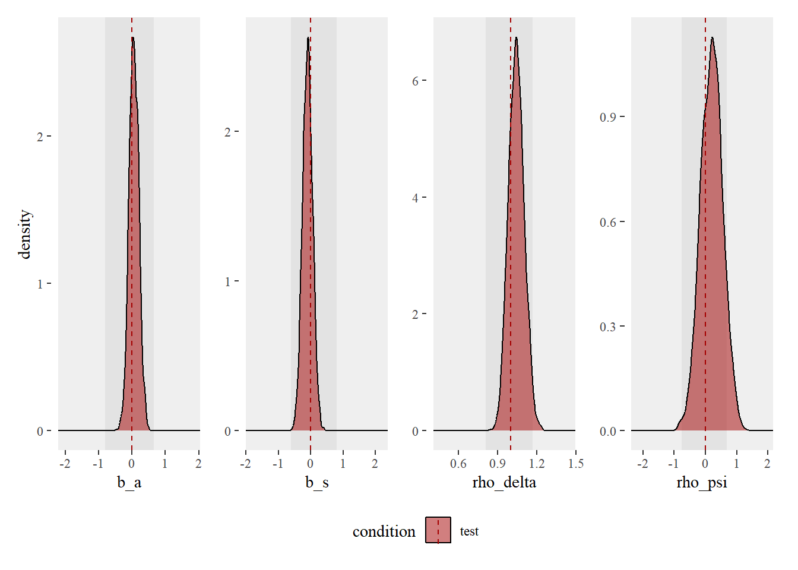
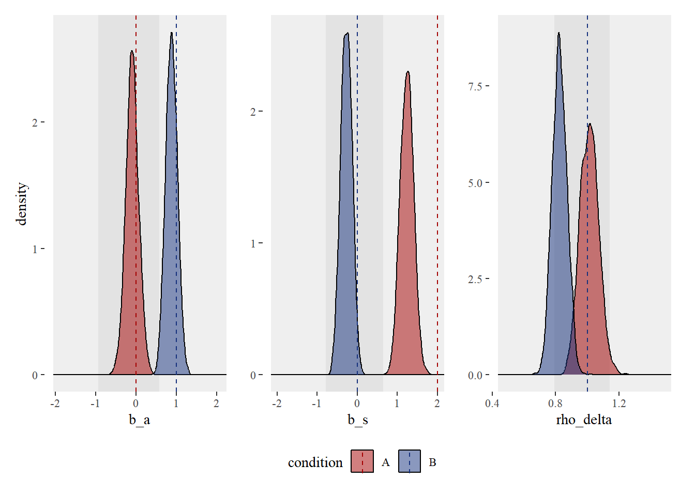

library(tidyverse)
library(cmdstanr)
library(loo)
source("../../functions/import_data.R")
source("../../functions/prep_data.R")
source("../../functions/compute_summary_stats.R")
source("../../functions/plot_model.R")
source("../../functions/plot_data.R")
source("../../functions/post_functions.R")
source("../../functions/sim_foraging_data.R")
options(mc.cores = 4)
# set global ggplot theme
theme_set(ggthemes::theme_tufte())
# create scratch folder if it does not yet exist
if (!file.exists("scratch")) dir.create("scratch")Testing simple models
Fitting Model to Simulated Data
- Model 1.0: the original model first detailed in Clarke et al (2022), reimplemented in new code. The only other edit is to correctly calculate absolute proximity (we previously scaled before calculating inter-item distances, which led to expansion of vertical distances compared to the horizontal in cases where foraging stimuli were arranged on a rectangular grid - this minor edit makes little difference to the overall fit of the model).
- Model 1.1: the same as model 1.0 except it uses relative proximity - for each item selection, we divide all inter-target distances by the distance to the closest item. The idea behind this is that it may allow the model’s proximity weighting to cope better towards the end of a trial when the items are sparser. [CURRENTLY NOT SHOW IN QMD]
- Model 1.2: the same as 1.0 except it has no parameter for relative direction.
- Model 1.3: the same as 1.0 except it adds in an absolute direction parameter, with 4 components.
A very simple simulation
n_trials_per_cond <- 25
stimuli_params <- list(n_item_class = 4,
n_item_per_class = c(10, 10, 10, 10),
item_labels = c("a", "b", "d1", "d2"))
foraging_params <- list(
b_a = 0,
b_s = 0,
rho_delta = 1,
rho_psi = 0)Our first simple simulation will involve 1 target class, with 20 target items on screen, and 25 trials. See above for the stimulus and foraging. parameters. For now, we simulate data for just one person.
Loading in our models
We pre-run our data simulation and model fits in 1_create_examples.R.
m10 <- readRDS("scratch/test_1_0.model")
m12 <- readRDS("scratch/test_1_2.model")
m13 <- readRDS("scratch/test_1_3.model")
d <- readRDS('scratch/data/test_data.RDS')Posterior fits
m10$summary() %>% knitr::kable(digits = 2) | variable | mean | median | sd | mad | q5 | q95 | rhat | ess_bulk | ess_tail |
|---|---|---|---|---|---|---|---|---|---|
| lp__ | -368.30 | -368.02 | 1.31 | 1.12 | -370.81 | -366.79 | 1 | 1134.23 | 1298.40 |
| b_a[1] | 0.05 | 0.05 | 0.14 | 0.15 | -0.17 | 0.28 | 1 | 2369.45 | 1675.50 |
| b_s[1] | -0.10 | -0.10 | 0.15 | 0.16 | -0.34 | 0.15 | 1 | 2035.52 | 1598.20 |
| rho_delta[1] | 1.04 | 1.04 | 0.06 | 0.06 | 0.95 | 1.14 | 1 | 2281.26 | 1517.41 |
| rho_psi[1] | 0.20 | 0.20 | 0.35 | 0.36 | -0.38 | 0.77 | 1 | 1905.21 | 1545.13 |
| prior_b_a | 0.01 | -0.01 | 1.01 | 1.02 | -1.67 | 1.67 | 1 | 1965.05 | 1910.90 |
| prior_b_s | 0.02 | 0.01 | 1.00 | 1.00 | -1.61 | 1.67 | 1 | 2165.78 | 1843.62 |
| prior_rho_delta | 1.00 | 1.00 | 0.25 | 0.25 | 0.59 | 1.40 | 1 | 2041.67 | 1751.03 |
| prior_rho_psi | 0.01 | 0.01 | 1.03 | 1.00 | -1.72 | 1.68 | 1 | 1989.22 | 1932.11 |
m12$summary() %>% knitr::kable(digits = 2) | variable | mean | median | sd | mad | q5 | q95 | rhat | ess_bulk | ess_tail |
|---|---|---|---|---|---|---|---|---|---|
| lp__ | -367.13 | -366.83 | 1.20 | 0.94 | -369.49 | -365.82 | 1 | 1074.85 | 1111.30 |
| b_a[1] | 0.05 | 0.05 | 0.15 | 0.15 | -0.19 | 0.30 | 1 | 2068.98 | 1487.28 |
| b_s[1] | -0.10 | -0.10 | 0.15 | 0.15 | -0.34 | 0.13 | 1 | 2057.73 | 1350.31 |
| rho_delta[1] | 1.05 | 1.05 | 0.06 | 0.06 | 0.95 | 1.15 | 1 | 1686.62 | 1484.35 |
| prior_b_a | 0.02 | -0.01 | 1.01 | 1.02 | -1.61 | 1.68 | 1 | 2056.61 | 1970.06 |
| prior_b_s | 0.03 | 0.06 | 1.02 | 1.01 | -1.64 | 1.74 | 1 | 1921.84 | 1965.85 |
| prior_rho_delta | 0.98 | 0.98 | 0.25 | 0.25 | 0.59 | 1.40 | 1 | 1984.26 | 1961.98 |
m13$summary() %>% knitr::kable(digits = 2) | variable | mean | median | sd | mad | q5 | q95 | rhat | ess_bulk | ess_tail |
|---|---|---|---|---|---|---|---|---|---|
| lp__ | -376.40 | -376.04 | 2.08 | 1.90 | -380.41 | -373.69 | 1 | 703.38 | 1077.69 |
| b_a[1] | 0.05 | 0.05 | 0.15 | 0.16 | -0.20 | 0.29 | 1 | 3964.77 | 1587.25 |
| b_s[1] | -0.11 | -0.11 | 0.15 | 0.15 | -0.35 | 0.14 | 1 | 4344.07 | 1394.76 |
| rho_delta[1] | 1.06 | 1.05 | 0.06 | 0.06 | 0.95 | 1.17 | 1 | 3322.30 | 1680.52 |
| rho_psi[1] | 0.14 | 0.15 | 0.37 | 0.36 | -0.45 | 0.75 | 1 | 3745.77 | 1464.84 |
| log_theta[1,1] | -0.90 | -0.85 | 0.62 | 0.61 | -2.01 | 0.00 | 1 | 2839.53 | 1189.24 |
| log_theta[1,2] | -1.69 | -1.65 | 0.61 | 0.62 | -2.73 | -0.75 | 1 | 2737.52 | 1239.01 |
| log_theta[1,3] | -0.09 | -0.05 | 0.50 | 0.48 | -0.98 | 0.64 | 1 | 3178.31 | 1613.49 |
| log_theta[1,4] | -1.43 | -1.40 | 0.60 | 0.57 | -2.51 | -0.54 | 1 | 2921.16 | 1328.84 |
| prior_b_a | 0.02 | 0.05 | 1.01 | 1.01 | -1.67 | 1.68 | 1 | 2087.90 | 2057.12 |
| prior_b_s | -0.01 | 0.02 | 1.02 | 1.00 | -1.73 | 1.67 | 1 | 1918.25 | 1892.29 |
| prior_rho_delta | 1.00 | 1.00 | 0.25 | 0.25 | 0.60 | 1.39 | 1 | 1922.48 | 1865.77 |
| prior_rho_psi | 0.00 | 0.00 | 1.01 | 1.02 | -1.60 | 1.67 | 1 | 2126.40 | 1956.70 |
Plotting the fixed effects
We can plot the fixed effects of the models (and can confirm that we are able to recover the parameters we put into the simulation). Below, we demonstrate for model V1.0.
post <- extract_post(m10, d)
plot_model_fixed(post, foraging_params)
A simulation with two conditions
experiment_params <- list(n_people = 1,
n_conditions = 2,
condition_labels = c("A", "B"),
n_trials_per_cond = 25)
stimuli_params <- list(n_item_class = 4,
n_item_per_class = c(10, 10, 10, 10),
item_labels = c("a", "b", "d1", "d2"))
foraging_params <- list(b_a = c(0, 1),
b_s = c(2, 0),
rho_delta = c(1, 1),
rho_psi = c(-1, 1))
variance_params <- list(b_a = c(0.1, 0.1),
b_s = c(0.1, 0.1),
rho_delta = c(0.1, 0.1),
rho_psi = c(0.1, 0.1))
absdir_params <- "off"
initsel_params <- "off"
params <- list(e = experiment_params,
s = stimuli_params,
f = foraging_params,
v = variance_params,
a = absdir_params,
i = initsel_params)We need slightly more complicated code to simulate multi-condition data. As we only have one person, we have set the variance parameters to be fairly small.
We can pre-run the models and plot the fixed effects in exactly the same way as before. Here, we show V1.2.
mm10 <- readRDS("scratch/test_multicond_1_0.model")
mm12 <- readRDS("scratch/test_multicond_1_2.model")
mm13 <- readRDS("scratch/test_multicond_1_3.model")
d2 <- readRDS('scratch/data/test_multicond_data.RDS')
post <- extract_post(mm12, d2)
plot_model_fixed(post, foraging_params)